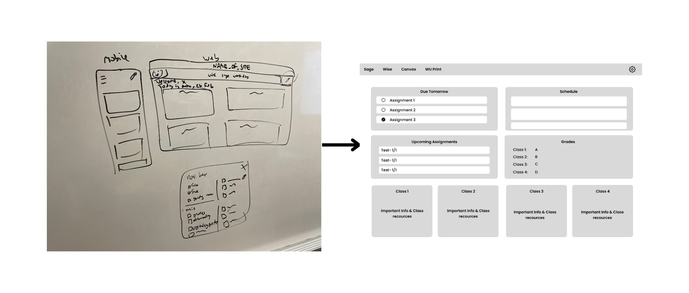
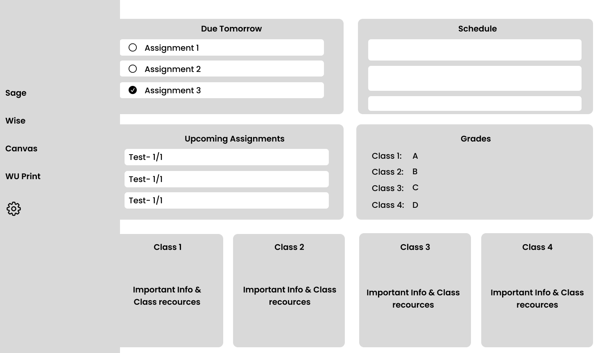
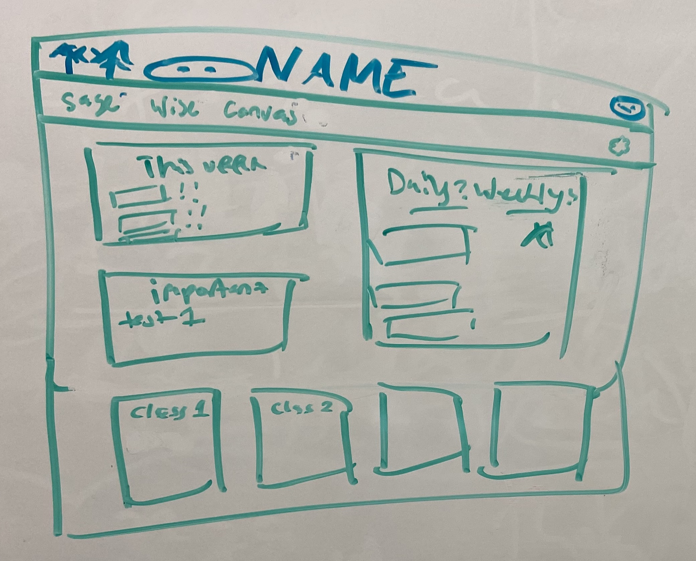
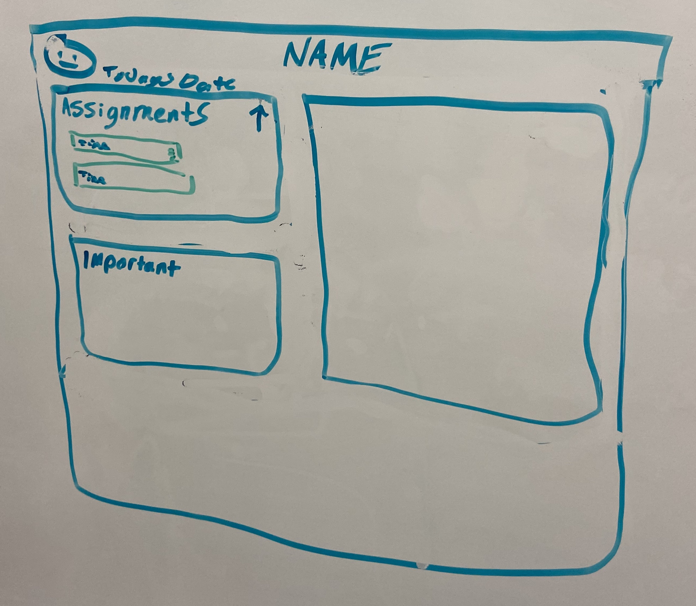
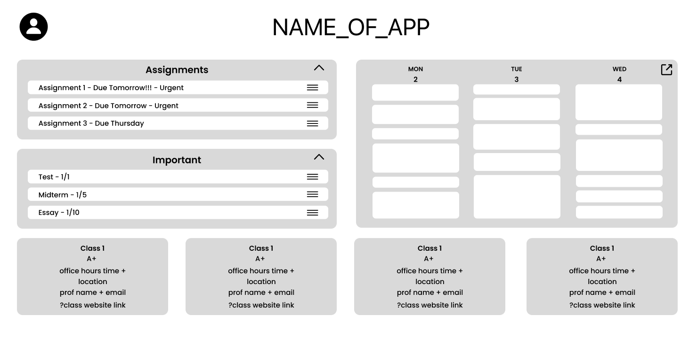
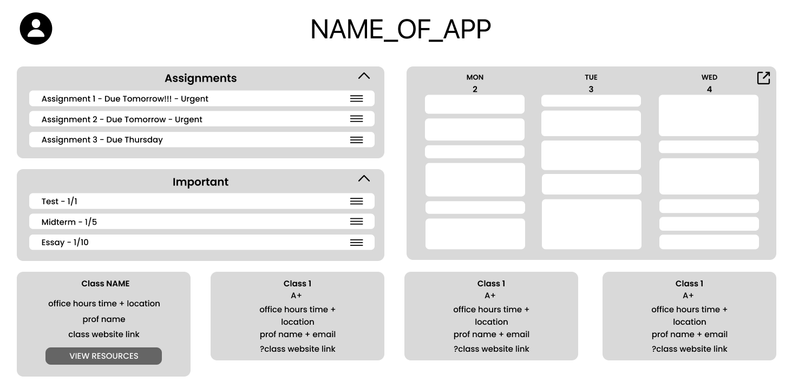
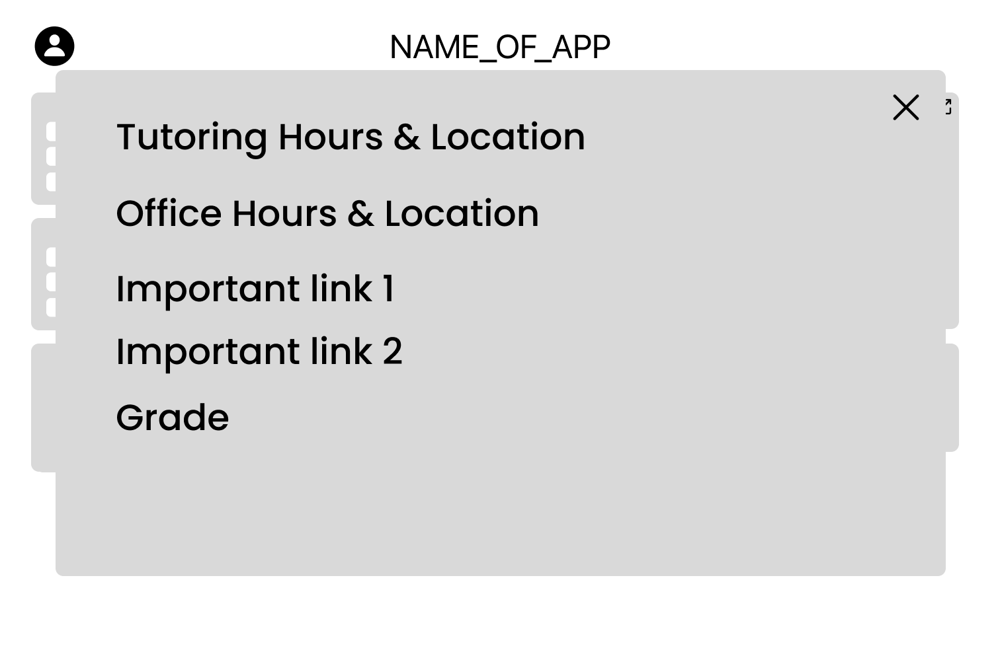
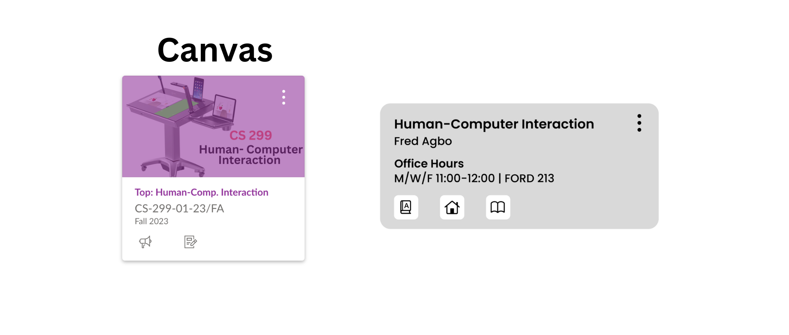
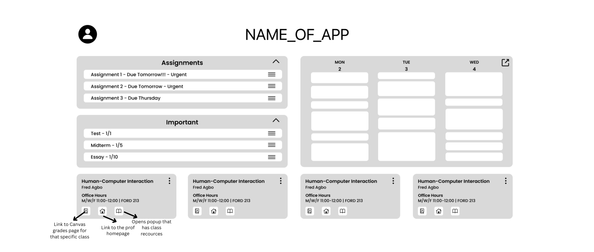

We began our creative process by brainstorming ideas on a classroom whiteboard. Our initial concepts were designed with distinct sections, each catering to essential aspects that students would find valuable upon visiting our website. These included features such as tracking assignments for the week, organizing their schedules with a planner, staying updated on upcoming tests, checking their grades, and accessing detailed information for each of their classes. Additionally, we wanted a navigation bar that would provide quick links to Canvas and Wise. After transferring our initial whiteboard sketch to Figma, we kept the design simple but added some words into it to help us better evaluate and refine the design we had originated from our whiteboard brainstorming session.
We also explored the idea of positioning the navigation bar on the left side, which could be toggled open and closed.
Upon discussing our design among each other about the page layout, we arrived at the realization that the grades section occupied excessive space relative to the information it conveyed. Therefore, we decided to relocate the grade information to the boxes where vital class details was located. We also recognized that the schedule section might have been too compact. A single-day schedule fell short of aiding students in planning their upcoming workload effectively. Thus, we opted to expand this section as well.
In pursuit of user-centered design, we sought feedback from end-users, namely students, to gather their thoughts and opinions. These discussions gave us valuable insights. For instance, the 'due tomorrow' section was too restrictive, failing to provide students with enough of a view of their upcoming assignments. Therefore, we modified 'due tomorrow' to have all assignments due within the next week. Additionally, we acknowledged that extending the schedule to cover 3-4 days, as opposed to just one, would better facilitate time management for assignments.
Taking these valuable ideas into account, we proceeded to sketch out a revised concept on the whiteboard.
Following a discussion within our team regarding the reasons behind a student's use of the navigation bar, we reached the consensus that the top links were not as necessary as we initially envisioned. Students already had convenient access to Canvas through several routes already on the page, such as clicking on an assignment in the 'this week' or 'important' sections or utilizing links within the individual class boxes. Therefore, we made the decision to remove the navigation bar, as we decided that it did not provide significant use. Therefore, we removed the navigation bar since it didn’t provide significant utility, and added unnecessary complexity to the page and took up extra space.
After transferring the initial sketch to Figma, we kept a simplistic design approach while introducing textual elements to assess whether we were satisfied with the concept that originated on the whiteboard.
Having the initial concept in place, we were still uncertain about the specific information that students might want within each 'class' box. After engaging in further conversations and sharing our design with students once again, we figured that essential elements included knowing office hours, tutoring times, easy access to crucial class-related links (such as readings or necessary software), and quick link to access their grade information. Following these insightful discussions with students, we integrated these ideas into our Figma design.
 After reviewing our latest design iteration, we noticed that Canvas had a somewhat similar and well-executed design for our class boxes. Canvas's incorporation of icons that provided direct access to specific pages proved to be highly user-friendly. Inspired by this, we decided to adopt the concept of simplicity and provide users with more options to access information in our own design.
After that update, we once again updated our Figma file.
Usability Goal: The user should easily understand their assignments due tomorrow.
Benchmark Task: Ask the user to tell us their assignments for tomorrow.
Usability Goal: The user should easily know the date about upcoming tests for their classes.
Benchmark Task: Ask the user tell us their next upcoming test date, for which class its for, and the subject.
Usability Goal: The user should understand that by clicking on an assignment within the 'this week' that it will take them to canvas.
Benchmark Task: Ask the user how they would see the details of an assignment on canvas from our page.
Usability Goal: The user should be able to customize the appearance of a class.
Benchmark Task: Have the user change the color theme for a particular class without any assistance.
Usability Goal: The user should easily rearrange assignments within the 'this week' section.
Benchmark Task: Instruct the user to move a lower assignment to the top of the 'this week' without providing specific steps.
Usability Goal: The user should intuitively comprehend the functions of various buttons in the class section.
Benchmark Task: Ask the user to explain the purpose of the three buttons in the class section.